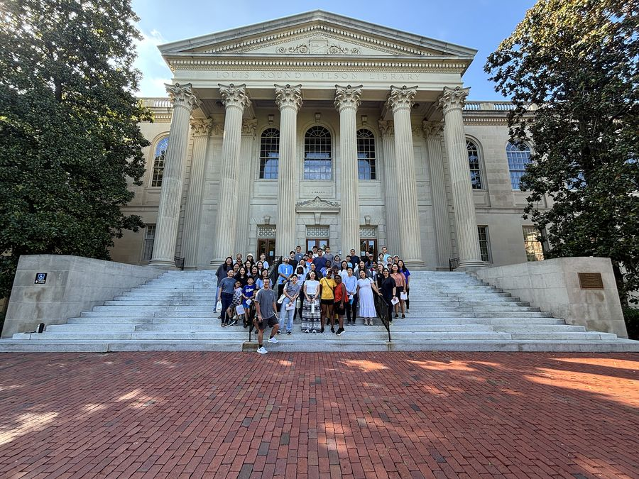
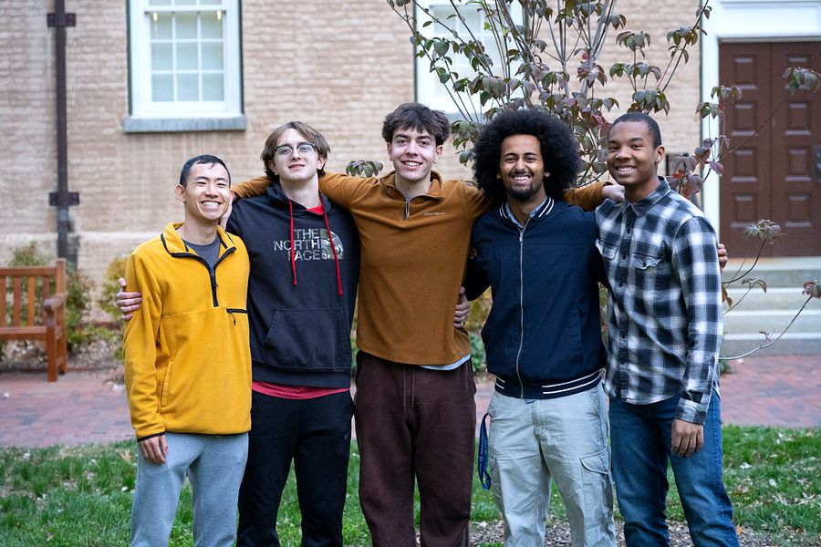

about us
our story
In the summer of 2017, a group of campus ministers left sunny California and moved across the country with one shared conviction: that the kind of church described in Acts 2 wasn't just ancient history. It was something worth building today.

We believe that college is the best time to be shaped into someone who knows the Bible and lives on mission.
At Acts2Fellowship, we're growing together: learning to study scripture for ourselves and gaining confidence to share Jesus with the friends right in front of us.
Whether you're new to faith or ready to go deeper, there's a place for you to be equipped and sent.

our vision
Our prayer is to see every person who walks through our doors, especially college students and young adults, come to know God deeply, live their faith genuinely, and go out as lifelong kingdom workers.
Our dream is to be a church that multiplies, sending out people who are more rooted, more equipped, and more on fire.